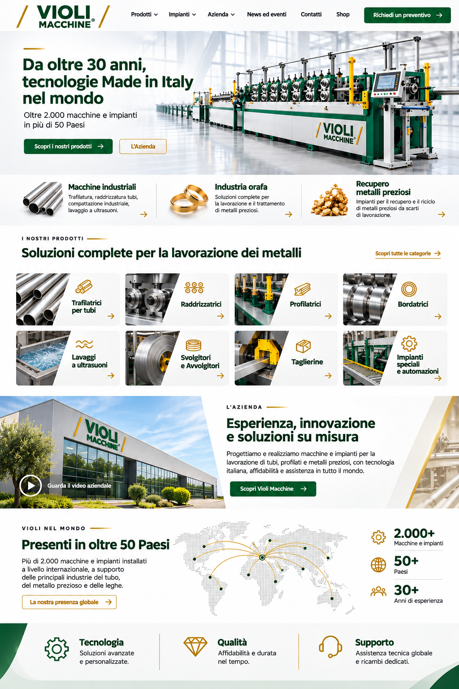

Da oltre 30 anni,
tecnologie Made in Italy
nel mondo
Oltre 2.000 macchine e impianti
in più di 50 Paesi
Macchine industriali
Trafilatura, raddrizzatura, tubi, compattazione industriale, lavaggio a ultrasuoni.
Industria orafa
Soluzioni complete per la lavorazione e il trattamento di metalli preziosi.
Recupero metalli preziosi
Impianti per il recupero e il riciclo di metalli preziosi da scarti di lavorazione.
I nostri prodotti
Soluzioni complete per la lavorazione dei metalli

L’Azienda
Esperienza, innovazione
e soluzioni su misura
Progettiamo e realizziamo macchine e impianti per la lavorazione di tubi, profilati e metalli preziosi, con tecnologia italiana, affidabilità e assistenza in tutto il mondo.
Scopri Violi MacchineVioli nel mondo
Presenti in oltre 50 Paesi
Più di 2.000 macchine e impianti installati a livello internazionale, a supporto delle principali industrie del tubo, del metallo prezioso e delle leghe.
La nostra presenza globale- 2.000+
- Macchine e impianti
- 50+
- Paesi
- 30+
- Anni di esperienza
Ascoltiamo le tue necessità
Soluzioni avanzate e personalizzate, costruite insieme a te.
Costruiamo Made in Italy
Dal progetto alla macchina, nella nostra sede di Monte San Savino.
Assistenza garantita
Installazione, training, manutenzione e ricambi dedicati.